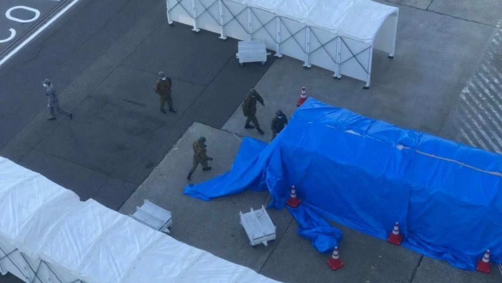
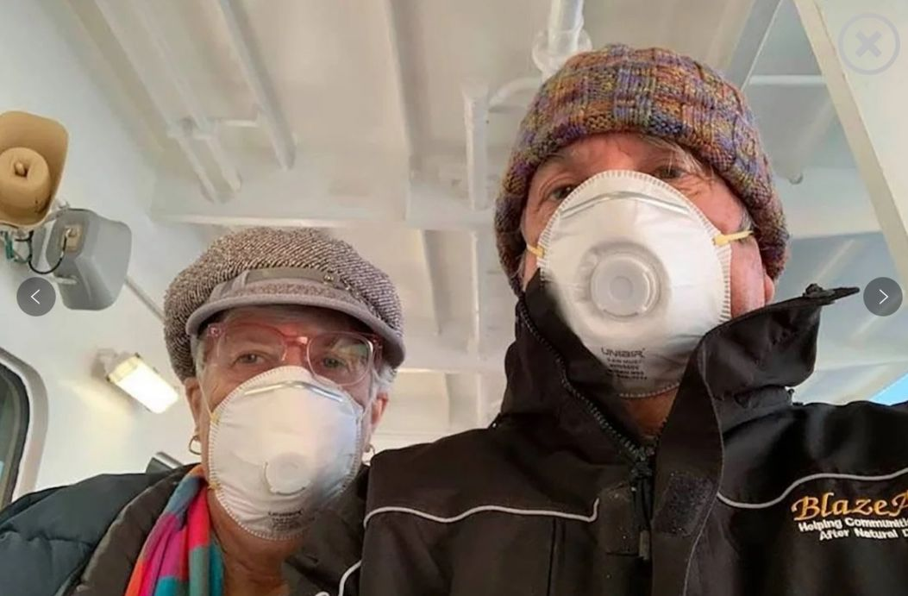
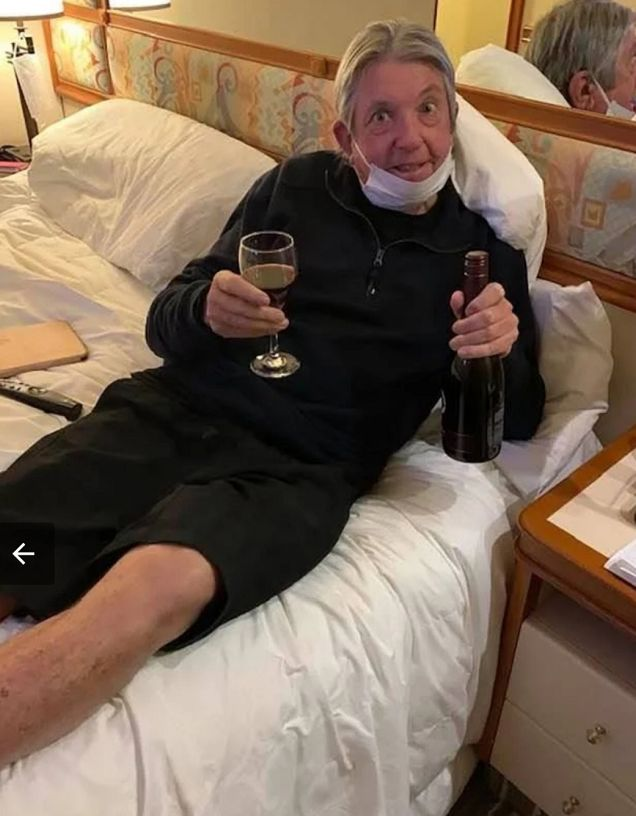
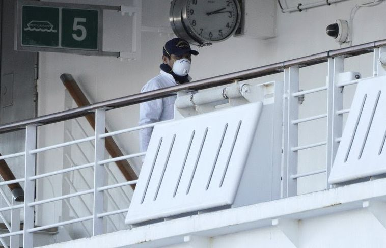
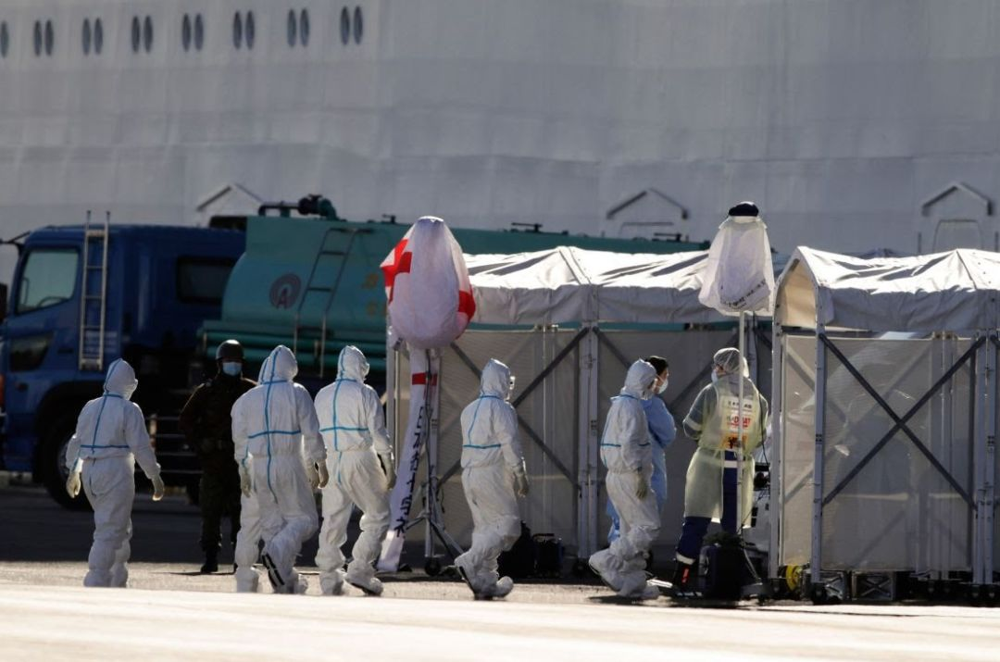

隔离中的“钻石公主号”乘客：每两天“放风”一次是最期待的事情
原文链接 备份链接 船上人们的焦虑也与日俱增。艾丽告诉新京报记者，“我们觉得自己不是在被隔离，而是等待着被感染。”和乘客相比，船员的住宿条件更差，艾丽住的员工宿舍两人一间，仅几平米，没有窗户。 全文6300字，阅读约需12.5分钟 1 …
2月5日，因船上有乘客被检验出新冠病毒感染，停靠在日本横滨港口的“钻石公主号”上的3600多人开始了14天的海上隔离。截至2月12日，这艘邮轮上的确诊感染者已达174人，远超日本本土的确诊感染总数，“钻石公主号”事件已经成为了除中国大陆以外，最多的群聚感染事件。隔离近一周后，增加的感染人数，有可能延长的隔离，越来越让船上的人们担忧。
**被隔离的“恐怖邮轮”
**

2月7日早上八点钟，泰勒站在船舱阳台前，朝窗外望了望，“钻石公主号”已经靠岸4天，但船上的乘客仍旧不能下船。两辆军用卡车和5辆救护车停在港口，几个身着迷彩服的日本人站在舱门旁边。被确诊感染新冠病毒的乘客和身着白色防护服的医护人员一起走下船，进入了隔离舱中。走廊里不断有乘客被带走，泰勒的心情紧张了起来，“感觉这就像是饥饿游戏，不确定下一个谁会被抓。”

2月3日，“钻石公主号”提前到达日本横滨港口，医务人员对船上的所有乘客进行了检疫。2月5日，因送检的31例样本中发现10例新冠病毒感染，日本卫生部门要求全体乘客在邮轮上进行隔离，不得随意离开船舱。
2月10日，船上的确诊感染人数已经达到135例，包括1名中国内地人，3名香港人，1名台湾人，73名日本人、25名美国人、11名澳大利亚人、8名菲律宾人、8名加拿大人、2名乌克兰人、1名英国人、1名阿根廷人和1名新西兰人。截止2月12日上午，邮轮感染人数已经增至174人，其中包括一位在船上收发乘客健康调查表的检疫官。船上的感染人数远超日本本土的确诊感染总数，“钻石公主号”事件已经成为了除中国大陆以外，最多的群聚感染事件。
负责应对船上疫情的日本厚生劳动省2月10日称，船上已接受病毒筛查336人，为了回应日本国民的不安和担忧，政府将考虑以所有乘客和乘员为对象，在他们于2月19日隔离检疫期结束下船时，进行新冠病毒的完整检测。而在此前，筛查对象的挑选，主要是与前一批确诊感染者的密切接触者。12日，厚生劳动省又表示，即日起，船上的高危群体，如老年人等可以下船，转移到日本境内的医院接受治疗观察。此外，逐日检出新感染者后，是否要重新计算其他人员的14天隔离期，也成为未知数。

泰勒和瑞秋是一对美国北德克萨斯州的新婚夫妇，他们的蜜月邮轮之旅本该在2月4日结束。但现在，他们和邮轮上的其他2664位乘客和1045名船员困在船上。确诊感染乘客将被接下船，送往横滨当地的医院进行观察。看到被迫与家人分离的乘客，泰勒许下了真爱誓言：“只希望我们不会分开。只要我们能一起待在船舱里，我们会尽量开心起来。”
泰勒住在一间阳台舱，属于船上三种舱型里最奢侈的一种，有窗户，有阳台，在被隔离的日子里可以自由享受阳光。下午时，他收到了几位澳大利亚朋友的信息，他们告诉他，他们的检测结果是阴性，泰勒松了一口气，要知道，那几个澳大利亚人可是坐在他和妻子身边吃了两周的晚餐。

放眼全世界，“钻石公主号”也算得上最适合蜜月旅行的邮轮之一，它位列全球十五大豪华邮轮之一，共有客舱1337间，其中748间带有私人露天阳台。总体积超过了三个“泰坦尼克号”，18层楼里娱乐场所俱全，酒吧、剧院、图书馆，甚至还有结婚礼堂。如果按照原定路线，邮轮于1月20日从横滨出发，1月22日停靠日本鹿儿岛，1月25日抵达至香港，一天后再次起航，途径越南岘港、下龙湾，台湾基隆、日本冲绳、静冈，最终于2月4日停靠横滨。
这趟旅程报价超过15000元人民币的15天的行程，足够泰勒和瑞秋加固感情。只不过，上了邮轮后，泰勒才发现，作为一对年轻的美国籍夫妇，他和妻子绝对属于船上的少数。因为邮轮上绝大部分都是年岁已高但却活力依旧的老人，他们在甲板上、大厅里漫步，显得这艘邮轮既空旷又祥和。
未能结束的旅行
黄雅馨是船上第一批感知到疫情的乘客，登船前，她就在网上看到了香港5例新型冠状病毒确诊的新闻。她告诉本刊记者，本以为相隔遥远，疫情很难传出来，一家七口依然在1月25日按原计划登上了船，只是在行李里加上了15副口罩。
但六天后的2月1日，她刷到了一条新闻：一位80岁的香港老翁被确诊为新冠病毒感染，确诊前曾乘坐“钻石公主号”。新闻上说，老翁1月19日出现咳嗽，1月20日从横滨上了邮轮， 22日经过鹿儿岛时，老翁还和其他40人一起下船乘坐了巴士观光，25日抵达至香港，30日老翁开始出现发热症状，进入了香港医院接受隔离治疗。
黄雅馨告诉本刊，她当即放下手机，戴上口罩，冲到客户服务间询问。船员告诉她，香港政府已经通知船方，目前只有一位客人确诊，出现发热、感冒迹象的客人将会被隔离，“有消息再通知你”。
那几天，中国船员王敏敏也常听国内的朋友发来疫情消息，得知船上出现一例感染病例后，她特意到邮轮医务室要了几幅口罩，但这不足以给她安全感。走廊里遇到其他船员，他们还面无遮挡地同她讲话。王敏敏对本刊记者说，有菲律宾同事还冲着她开玩笑地喊道：“Virus！Virus！”**船上超过一千位船员，其中20个来自中国，其他大都是东南亚人，王敏敏估摸着，自己一天最少也要接触500人，说不定其中就有潜伏期患者。
**

船上的印度员工
隔离的命令是一步步下达的。2月3日下午，廖芳从广播里听到，邮轮将会提前十小时到达横滨。廖芳告诉本刊记者，因为同行的八位老人听不懂日语和英文，她每次听广播都格外认真。广播播放结束，船上再次喧闹起来，室内游泳池旁的乘客有说有笑，围坐在方桌的四周打麻将、打牌，日本乘客秋田路过时，掏出手机，拍了张照片，发在了自己的推特上；主大厅旁的休息室里，十多个老人坐在棕褐色的皮质沙发里，轮番传递话筒，一位白发老人点了一首日文歌。
晚上8点45分，船上剧院将上演一出音乐剧。离演出开始前半小时，接近一半的观众已经入座。红色帷幕拉开前，欢快音乐声在大厅里不停回绕，为了听清彼此讲话，人们头贴着头互相聊天。与此同时，日本卫生局的检疫人员穿戴好了口罩、防护服，正在朝巨轮赶来。
晚上，检疫人员从顶层开始，挨个进入客舱，对着乘客的耳朵，按动耳温计按钮。乘客拿着健康测试卡，发热、感冒、流鼻涕都勾选否后，检疫人员便会离去。但也有人需要做进一步检验，凌晨4点半，黄雅馨一家被再次叫醒，检疫人员拿棉签采了三人的咽拭子样本，黄雅馨的丈夫因为看过船医，而被列入了273位第一批样本，**这273人中有153人与香港老翁有过密切接触，120人出现了发热咳嗽的症状。
**

船上乘客
检疫工作进行了一整天。2月5日一大早，广播响起，等来的却不是下船通知。船长略显疲倦地说，检疫仍在进行中，已经送检的31例样本中，有10位确诊感染，日本厚生劳动省要求，所有乘客将进行14天的隔离。
隔离的消息仿佛平静水面中砸下的一块石头。有乘客特地开了一个新的推特账号，并改名为“被隔离在钻石公主号上”，发出了第一条消息。廖芳一家立刻戴上了口罩，在香港上船前，量过体温的她放心地将口罩摘下，收了起来，而现在，她又重新戴起。
从2月5日开始，船员罗斯被要求全天都要戴手套和口罩，把餐盘从厨房端到船舱走廊，挨个放到船舱门槛，这一系列重复动作将从早上6:30开始，持续13个小时，在此之前他只需工作10小时。他回想起4日晚上，他工作完如常回到了6平米的员工船舱里休息，“船刚刚停靠在横滨，我睡着了，一切都很好。我绝对没想到第二天我会在隔离区醒来。”

船上乘客
罗斯说，他之前习惯每天下班后，在船员酒吧喝杯啤酒。隔离开始后，酒吧、赌场都关了，罗斯便一个人待在甲板上，呼吸新鲜空气，顺带着吃点东西，抽支烟。晚上气温低，海风吹得罗斯直打冷颤。“一切都更混乱了。我不会说我现在是一个服务员，我更像是一个护士，或者是在监狱的看守，在囚犯牢房外面吃饭。”
回过头看，廖芳是如此的希望2月3日就是她在船上的最后一晚，那一晚本可以给这趟旅程画上一个完美的句号。自助餐厅的黄色顶光打在茶色桌子上，映得大厅辉煌。享用晚餐的乘客坐在一起，四个入口处分别站着一位身着制服的船员，每走进一个乘客，他们便说一句，先洗手再用餐，声音温柔。洗手盘前边角已经磨损的纸上写着“至少要洗20秒”，乘客便一个挨一个，耐心等待着。转至深夜，餐厅的经理和所有服务员站成了一排，占据了整个走廊，他们抬起手，清一色地挥舞着手中的手帕，连声向乘客们道别。
**
而现在，句号变成了省略号，他们所面临的是漫长的隔离。
**
“不算太糟糕”
隔离开始的几天，客房餐饮部门手忙脚乱，乘客常常一觉醒来饥肠辘辘，却还是等不到午餐。“我梦想有一天能被客房服务吵醒，然后再上床睡觉。”日本乘客石原说。这段时间，她感觉自己的耳朵也紧张了起来，舱外发出半点声响，她都能立刻捕捉。一天，锅里煮鸡蛋发出了刺啦的声音，她兴奋地小跑到门口，打开舱门，翘首以盼的服务生并没有出现。
被隔离后，马修·史密斯仍旧坚持一日三餐推特打卡，早上的炒蛋、汉堡、牛角包，中午的日式纳豆饭，“现在我们唯一能做的，是不要去想还剩下多少时间。只要你接受每一天，每一秒，就不算太糟糕。”
秋野女士的女儿在邮轮上工作，她问女儿想吃什么，给女儿寄过去。女儿回复说：“只想吃杯拉面，因为没有时间慢慢吃东西了。”和罗斯一样，秋野女士的女儿每天要持续工作13个小时，中间只有一个小时休息。

清扫工作同样困扰着船上的人。石原没有想到，在家都要用清洁机器人打扫房间的她，现在要在这座豪华邮轮上打扫自己的船舱。从排水管到红色地毯，她要挨个用洗涤剂清理。清洁工作的繁重让她感到疲惫，她为此暗下决心，下次坐船要带吸尘器来。
黄雅馨和丈夫、儿子挤住在一间十多平米的船舱内，没有窗户，没有阳台。前一晚，她还在为家里人的身体状态而感到担忧，爸爸妈妈，姨妈姨丈和她同行，都被隔离在另外两间内舱里。“我为不能出去呼吸新鲜空气而感到痛苦，我想哭。”黄雅馨对本刊说。2月7日一早，她被船上的通知广播惊醒：“我们已经与卫生部门取得商议，决定让每位宾客都能拥有固定的活动时间。”在内舱里闷了72小时的黄雅馨一家终于得到允许，到甲板上活动60分钟。

登上甲板的那一刻，黄雅馨和家人终于迎来了久违的新鲜空气。海上的阳光不甚刺眼，海风轻轻吹过，不再像前几天那样凛冽。爸妈、姨妈姨丈相隔了一米，他们戴着口罩，站在甲板上，扭动腰胯，拉伸肢体。儿子告诉黄雅馨，这是他人生中最好的一天。
2月8日早上，“钻石公主号”又重新启动，前往近海。9点26分时，号角吹响，石原透过窗户，看到巨轮一点点远离横滨港湾大桥，远处的富士山也越来越小。前方的一切充满了未知，“与富士山告别，我希望这不会是永远的告别。
**未知的风险
**
2月9日，石原在自己的推特上说：“饭没有来，药没有来，电话也没有来，我睡着了，只有一段令人绝望的广播。”那天，她从广播中得知，日本厚生劳动省最新统计报告，邮轮确诊的新冠病毒感染者增加了6人，总数达到了70人。
2月9日也是廖芳在船上最焦虑的一天。和她同行的14个人中8位都是老年人，四天前，在药品登记册上写下药名后，叔叔阿姨们一直没拿到药。廖芳打电话询问服务台，服务台告诉她，药物已经运到，但还在分拣中。另一边，患有糖尿病、心脏病的叔叔阿姨等不了，廖芳急得在船舱团团转。在外贸公司做出口的她习惯了处理紧急事务，但这是她头一次感觉到自己掌握着生命攸关的事情。廖芳想尽了一切方法，前一天晚上11点还在向香港出入境总署求助，对方告诉她，采购完药品再寄送到船上，要经过一道道审批。

乘客打出“药不够”的求救布条
码头上，日本政府提供医疗物资已经运到。“钻石公主号”所属的邮轮公司对外回应说：“日本政府正为我们的船只和船员提供额外的人力支持，包括7000个防护口罩和由16名医生、12名护士及医疗接待人员构成的专业医护团队，我们也在为有需求的宾客提供相应的药品。目前我们已收到大约2000份药品补缺申请。这些申请将根据需求和紧急程度来决定优先次序。”
对病毒传播渠道的猜测也甚嚣尘上。盖伊·库特是一位美国小说家，她曾在另一艘邮轮上揭开过一起谋杀之谜。而现在，被隔离在“钻石公主号”上，她试图揭开另一个谜团：“尽管船员戴着橡胶手套，他们正在努力保护乘客，但没有科学证据表明，病毒不会通过他们传播。”
工作一天后，王敏敏回到了船舱三层，在这个海平面以下的位置住满了维持整座邮轮运行的船员。王敏敏和一个菲律宾人挤住在一间有上下铺的船舱，船舱里除了床，别无他物。她打开船舱空调后隐约记起，自己曾看过一些关于SARS病毒的文章，文章里提到中央空调会增强病毒的传播。她越想越害怕，“我们不是被隔离，而是在等待被感染。”
有美国乘客打电话给美国驻日大使馆表达了和王敏敏一样的担忧。2月9日，船上的428名美国乘客收到了疾病预防控制中心官员的信，信里说，该中心“目前没有证据表明病毒通过空气处理系统在船上的房间间传播。”

收货通道终于建立了起来。2月9日石原的家人拖着行李箱到了码头，他们为她带来了药、泡面和清洁用品，带给石原的东西上船前都要经过检查，石原站在阳台上远远地望着，她拿着手机和家人聊天，努力挥动着手臂，向他们示意。“我不由得想起了最近看过的那部关于柏林墙的纪录片。”石原说。
邮轮上的好消息与坏消息总是交替到达。10日早上，邮轮公司刚刚宣布，将全额退还乘客此次邮轮费用，其中包括酒店费和机票费。傍晚时，广播里便通知，船上的确诊感染人数累积达到了135例，65位新增患者将在第二天被送下船。
11日早上六点，廖芳早早起了床。前一晚接到一个电话，确认最后一位同行老人拿到了药后，她倒头就睡。船上的一千多份药物全都已经派发完毕。廖芳走上露台，想去伸展一下身体。码头上，40多辆救护车排了三排，警笛声在空中回荡，船上不停有人从搭建好的隧道中被送出，被身着防护服的人们紧紧包裹着。这几天来，廖芳已经习惯了这样的场面。

清晨时，船长的声音如期而至：“早上好，我们准备好迎接一天的挑战，坚强而团结。‘钻石公主号’将在12点左右起航，向东南方向出海，取水并倾倒垃圾。这次海水应该不会那么糟糕。让我们一起解决这一天。”
这一天，廖芳得知135名确诊感染者中有10名船员。她打了通电话给中国驻日大使馆，她告诉他们，她想回家隔离，在船上，时间每流逝一天，危险便多了一分。王敏敏则守在电话旁，等待乘客随时召唤，把毛巾送去船舱。她自己的一通电话，迟迟打不出去。
刷新闻这几天，只看到有关乘客的信息，她以为，船上的20名中国员工就如同藏于海平面以下的船体一样不被人所见。“我想让大家知道我们的存在，我们员工在船舱里还可以自由活动，乘电梯我们聚在一起，吃饭时我们几十人面对面坐着。现在连甲板，我都不敢上了。”王敏敏说。这通电话，她也想打给大使馆，但她的手始终没按下拨号键，她害怕“打了没人接，最后一条路也断了”。
接近黄昏，新增的65位确诊感染患者全部被送下了邮轮。巨轮终于再次开动，海浪微伏，“钻石公主号”摇晃着向海中驶去。与三天前不同的是，邮轮上多了45名医生，55名护士和45名药剂师。两艘海岸警卫艇尾随其后，在蓝色海面上划出了两道白线。
（文中廖芳、王敏敏、罗斯、秋田、石原为化名）

⊙文章版权归《三联生活周刊》所有，欢迎转发到朋友圈，转载开白请联系后台。未经同意，严禁转载至网站、APP等。
点击图片，一键下单
【武汉现场：抗击新冠肺炎】

*点击阅读原文，进入周刊书店，**购买**【新冠特刊】*
原文链接 备份链接 船上人们的焦虑也与日俱增。艾丽告诉新京报记者，“我们觉得自己不是在被隔离，而是等待着被感染。”和乘客相比，船员的住宿条件更差，艾丽住的员工宿舍两人一间，仅几平米，没有窗户。 全文6300字，阅读约需12.5分钟 1 …
原文链接 备份链接 _ 一名香港游客感染了新冠肺炎病毒，使得这艘邮轮的“春节之旅”演变为一场全球直播的公共卫生事件 _ 文 |《财经》记者 杨立赟 余乐 编辑 | 余乐 最近一周以来，停靠在日本横滨港的“钻石公主号”邮轮成为了全球关注的 …
原文链接 备份链接 【财新网】（记者 王婧）连续三户人家确诊新冠肺炎后，广州市海珠区一栋住宅楼全体住户于2月11日晚上接到通知，所有人员将被转移至定点酒店，实施集中隔离医学观察。2月12日凌晨，广州市海珠区通过官方微博确认上述信息。 …
原文链接 备份链接 我也是个普通人，也会恐惧。但我是一名医务工作者，同时是一名党员；我们黄冈的疫情是全国城市里除武汉之外最重的几个之一，这样的困难情况下，我们不去，谁去？必须要坚持，一定要挺住。 口述 | 陈 林 整理 | 王 煜 我是湖 …
原文链接 备份链接 题目叫“回武汉记”，其实人还在潜江，一步也走不了。所以应该叫“准备回武汉记”。希望下周的记录，是真正的回城记。 2月4日，正月十二。 隔离十四天结束，写了十四天日记。接下来的记录，应该叫“回武汉记”——虽然回武汉还没有 …